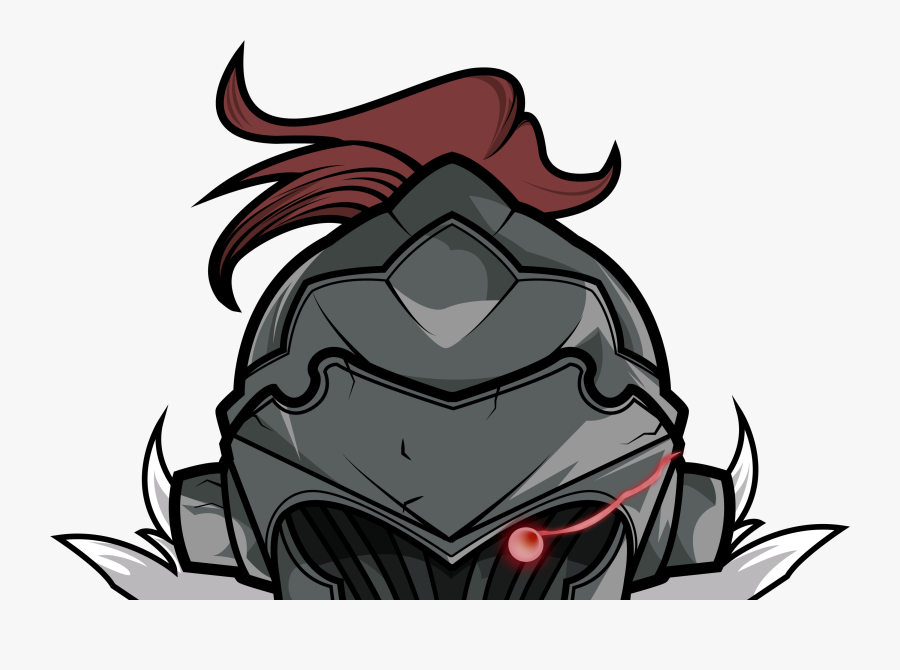

 Radio Bestari V2.1
| Unleashing Epic Coolness Across the Airwaves |
MALAYSIA
Hot FM
Fly FM
Hitz FM
Era FM
JAPAN
J-Pop Powerplay |Nagoya|Jpop|Rock
Japanimradio |Osaka|Jpop|JMusic|Kpop|Vocaloid & others
Vocaloid Radio //OnlyPhone//
Gensokyo Radio |Tokyo|Electro|Techno|English|
J-Pop Powerplay Kawaii |JPop girlbands|
J-Club asia DREAM |Hip-Hop|R&B|
Anime FM |German|Pop|Anime|
Big B Radio |Pop|Rock|English|